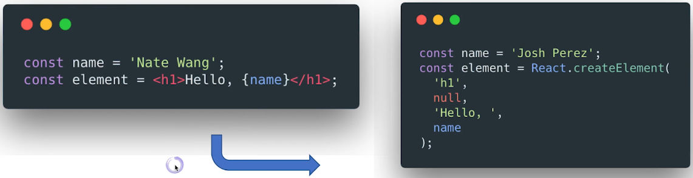
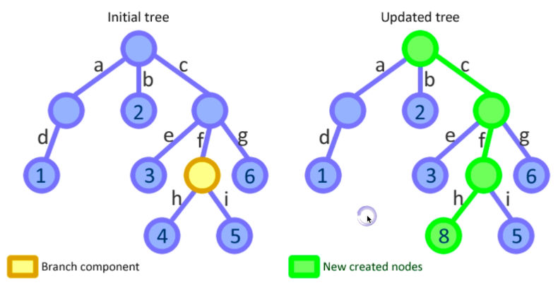

- 1丨react出现的历史背景及特性介绍
- 2丨以组件方式考虑ui的构建
- 3丨jsx的本质 不是模板引擎 而是语法糖
- 4丨react组件的生命周期及其使用场景
- 5丨理解virtual dom及key属性的作用
- 6丨组件设计模式 高阶组件和函数作为子组件
- 7丨理解新的context api及其使用场景
- 8丨使用脚手架工具创建react项目
- 9丨打包和部署
- 10丨redux (1) 前端为何需要状态管理库
- 11丨redux (2) 深入理解store action reducer
- 12丨redux (3) 在react中使用redux
- 13丨redux (4) 理解异步action以及redux中间件
- 14丨redux (5) 如何组织action和reducer
- 15丨redux (6) 理解不可变数据 (immutability)
- 16丨react router (1) 路由不只是页面切换 更是代码组织方式
- 17丨react router (2) 参数定义以及嵌套路由的使用场景
- 18丨ui组件库对比和介绍
- 19丨使用next (使用它创建react同构应用)
- 20丨使用jest和enzyme等工具进行单元测试
- 21丨常用开发调试工具
- 22丨前端项目的理想架构即可维护 可扩展 可测试 易开发 易构建
- 23丨拆分复杂度 (1) 按领域模型 (feature) 组织代码 降低耦合度
1丨react出现的历史背景及特性介绍
1-1 react解决ui细节问题
1个新概念：组件
用组件的方式去描述UI
4个必须API
单向数据流
完善的错误提示
1-2 react解决数据模型问题
传统MVC难以扩展和维护，为了解决这个问题，提出Flux架构，它是一种设计模式，核心思想是单向数据流：
流程描述：
当UI(React Views)上发生用户的操作(User interactions)会产生一个Action，这个action会通过Dispatcher dispatch出去，然后由Store进行处理，store根据这个action来更新自己，因为我们的views是绑定在store上的，所以当store有任何变化时，它就会发生更新。
Flux架构完全是建立在React始终以状态为基础来展示UI的，所以不需要关心细节就可以把views connect到一个store上。
Flux架构的衍生项目：Redux、Mobx
1-3 小结
- 传统Web UI开发的问题
- React：始终整体刷新页面
- Flux：单向数据流
2丨以组件方式考虑ui的构建
2-1 将ui组织成组件树的形式

2-2 理解react组件
外部传进来的属性props + 内部维护的状态state = view
- React组件一般不提供方法，而是某种状态机
- React组件可以理解为一个纯函数
- 单向数据绑定
2-3 创建一个简单的组件: tab-select
创建静态UI
一般就是由html去描述
考虑组件的状态组成
考虑状态是来自外部还是需要在内部去维护
考虑组件的交互方式
用户在内部进行了操作，如何暴露给外部使用
组件内部：
组件外部：
2-4 受控组件 vs 非受控组件
受控组件：
表单元素状态由使用者维护
非受控组件：
表单元素状态DOM自身维护
2-5 创建组件要遵循什么样的原则?
何时创建组件：单一职责原则
每个组件只做一件事
如果组件变得复杂，那么应该拆分成小组件
这样做有两个好处：
(1) 可以把复杂度拆分到不同的地方去
(2) 可以提高性能：如果组件很大，一点变化可能就要导致整个大组件刷新，拆成小组件，只会出现小组件的刷新
数据状态管理：DRY原则
简言之，不要去做重复的状态保存。
能计算得到的状态就不要单独存储
比如：发请求，未收到响应时，数据为空，这时就知道处于loading状态，而没必要存储loading的state
组件尽量无状态，所需数据通过props获取
3丨jsx的本质 不是模板引擎 而是语法糖
3-1 理解jsx
不是模板语言，只是一种语法糖
在JavaScript代码中直接写html标记
本质：动态创建组件的语法糖，而且是用的JavaScript的语法
例1：
createElement的参数：
h1：标记的类型
null：传给它的属性
Hello, 和name：都是它的children
即，从第三个参数开始，都是这个元素的子元素。
例2：
3-2 在jsx中使用表达式
JSX本身也是表达式
1
const element = <h1>Hello, world!</h1>
在属性中使用表达式
1
<MyComponent foo={1 + 2 + 3 + 4} />
延展属性
1
2const props = {firstName: 'Ben', lastName: 'Hector'}
const greeting = <Greeting {...props} />表达式作为子元素
1
const element = <li>{props.message}</li>
子元素是React组件的特殊属性，这个属性会传给children，作为子元素，这个返回值就需要是个可render的节点，如组件node、原生node或字符串。
3-3 jsx的优点
声明式创建界面的直观
比如有非常多的html标记，除了原生的，还有自己定义的，可以很方便地去描述UI
代码动态创建界面的灵活
什么时候创建节点，这个节点什么时候应该消失，属性什么时候发生变化
无需学习新的模板语言
3-4 jsx的约定: 自定义组件必须以大写字母开头
React认为小写的tag是原生DOM节点，如div
大写字母开头为自定义组件
JSX标记可以直接使用属性语法，例如
<menu.Item />这种语法不需要遵循大写字母开头的约定
4丨react组件的生命周期及其使用场景
三个阶段：Render阶段、Pre-commit阶段、Commit阶段。
commit是React把当前的状态映射到DOM时，需要实际地更新DOM节点，更新DOM节点就称之为commit。
在pre-commit阶段还没真正地更新DOM，但是在这个阶段可以读取DOM节点的内容。
三个类型：
创建时
4.1 constructor
标准的JS类的构造函数，一个组件在更新到界面上之前，首先需要创建出来，特点：
- 用于初始化内部状态，很少使用
- 唯一可以直接修改state的地方
this.state=xxx
4.2 getDerivedStateFromProps
React16.3新引入的api，提供了一个最佳实践 - 如果从外部属性来初始化内部状态。在这个方法里返回的状态都可以merge到当前的状态上。
使用场景：当state需要从props初始化时使用
尽量不要使用（不推荐使用）：维护两者状态一致性会增加复杂度
每次render都会调用
因为它是用来取代componentWillReceiveProps时使用的
典型场景：表单控件获取默认值
4.3 render
描述UI DOM结构的地方，是组件唯一必须定义的生命周期方法。
4.4 componentDidMount
UI渲染完成后调用
这时可以安全地操作DOM节点，以及触发ajax请求去获取外部的资源
只执行一次
典型场景：获取外部资源
更新时
当这个组件有一个新的属性props传进来或者内部调用setState方法修改了内部状态state或者调用forceUpdate强制组件刷新时发生。
4.2 getDerivedStateFromProps
4.5 shouldComponentUpdate
它可以告诉组件是否真正需要render，这是一个可以用户介入的过程，比如当props发生变化时，我们可以判断界面的UI不需要变化，这时就可以告诉React组件不需要update，只需要在这个方法中返回false即可。当返回true时，React才继续下面的流程 - render。
决定Virtual DOM是否要重绘
一般可以由PureComponent自动实现
它可以判断当前的props和之前的props、当前的state和之前的state是否有变化，如果没有变化，它会自动组织React重新更新
典型场景：性能优化
4.3 render
计算背后的虚拟DOM，这个DOM用来维持内部UI的状态，可以计算一些diff等等。
4.6 getSnapshotBeforeUpdate
React16.3新引入的api
在页面render之前调用，state已更新（从外部props传进来）
典型场景：获取render之前的DOM状态
举例：
1
2
3
4
5
6
7
8
9
10
11
12
13
14
15
16
17
18
19
20
21
22
23
24
25
26
27
28
29
30
31
32
33
34
35
36
37
38
39
40
41
42
43
44
45
46
47
48
49
50import React, { PureComponent } from "react";
import PropTypes from "prop-types";
import "./SnapshotSample.css";
export default class SnapshotSample extends PureComponent {
state = {
messages: []
};
handleNewMessage() {
this.setState((prev) => ({
messages: [`msg ${prev.messages.length}`, ...prev.messages]
}));
}
componentDidMount() {
for (let i = 0; i < 20; i++) this.handleNewMessage();
this.interval = window.setInterval(() => {
if (this.state.messages.length > 200) {
window.clearInterval(this.interval);
return;
}
this.handleNewMessage();
}, 1000);
}
componentWillUnmount() {
window.clearInterval(this.interval);
}
getSnapshotBeforeUpdate() {
return this.rootNode.scrollHeight;
}
componentDidUpdate(prevProps, prevState, prevScrollHeight) {
const scrollTop = this.rootNode.scrollTop;
if (scrollTop < 5) return;
this.rootNode.scrollTop =
scrollTop + (this.rootNode.scrollHeight - prevScrollHeight);
}
render() {
return (
<div className="snapshot-sample" ref={(n) => (this.rootNode = n)}>
{this.state.messages.map((msg) => (
<div>{msg}</div>
))}
</div>
);
}
}1
2
3
4
5
6
7.snapshot-sample {
overflow: auto;
height: 100px;
widows: 300px;
border: 1px solid #eee;
padding: 20px;
}
4.7 componentDidUpdate
每次UI更新时被调用
我们已知React组件在外部props或内部state变化时都会重新渲染，它始终会整体刷新，所以UI的更新非常频繁，这个方法可以捕获每次更新
典型场景：页面需要根据props变化重新获取数据
比如说，当前文章是通过id参数决定显示什么内容，可以在这个方法里，根据不同的id获取到的文章内容，再更新到UI上。
卸载时
4.8 componentWillUnmount
- 组件移除时被调用（从界面上消失时销毁自己）
- 典型场景：释放资源
4.9 小结
- 理解React组件的生命周期方法
- 理解生命周期的使用场景
5丨理解virtual dom及key属性的作用
5-1 理解 virtual dom
它是JSX运行的基础
React组件在内部维护了一套虚拟DOM的状态，这套DOM状态最终会映射到真实的DOM节点上，当虚拟DOM的状态发生变化时，内部需要计算虚拟DOM之间的区别来产生一个diff，最终在真实的DOM节点上并不是真实地刷新所有的DOM，而是只把diff的部分用一种高效的方式更新到UI上，从而能够保证性能
虚拟DOM是如何工作的？ - 原理
广度优先分层比较
拿到前后两个DOM树，一层一层地比较，上图两个状态的区别：
A和B两个节点顺序发生了变化，第三层D节点原来在B下面，移动到了下层节点，A节点由圆形的组件变成了方形的，表示它的组件类型发生了变化。针对这些不同的变化，React diff算法有不同的处理方式：
第一层：根节点开始比较
参考上图
发现两个节点完全一样，不做任何修改。
第二层：属性变化及顺序
参考上图
如果想知道A和B发生了顺序变化，需要给出唯一的标识，算法做的事情是交换两个节点的位置。
第三层：节点类型发生变化
React做的事情是直接把F节点删掉，创建一个新的节点G，并append到A上，不会去管F节点是否被其他地方用到。
节点跨层移动
参考最上面的图
D从B节点下面，移动到了下下层节点。React的diff算法会把D节点及它下面的子元素全部删除掉，再创建一个全新的D节点加到当前的DOM树上。
当节点跨层移动时，react的这种做法看上去性能有点低，但这种应用场景很少出现。
虚拟DOM的diff算法得以实现，基于两个假设：
组件的DOM结构是相对稳定的（很少发生跨层移动的场景）
类型相同的兄弟节点可以被唯一标识
这就是key的作用，不止用于消除warning，还能提高性能
5-2 小结
- 算法复杂度为O(n) - 线性的复杂度，性能高
- 虚拟DOM如何计算diff
- key属性的作用
6丨组件设计模式 高阶组件和函数作为子组件
6-1 高阶组件 (hoc)
它是对已有组件的封装，形成新的组件，新组件会包含一些自己的应用逻辑，这些逻辑会产生一些新的状态，这个状态会传给已有的组件，因此高阶组件一般不会有自己的UI展现，而是只负责为它封装的组件提供额外的功能和数据。如图中绿色的组件：
高阶组件接受组件作为参数，返回新的组件。
1
const EnhancedComponent = higherOrderComponent(WrappedComponent)
以定时器为例：
高阶组件withTimer.js：
1
2
3
4
5
6
7
8
9
10
11
12
13
14
15
16
17
18
19
20
21
22
23import React from "react";
export default function withTimer(WrappedComponent) {
return class extends React.Component {
state = { time: new Date() };
componentDidMount() {
this.timerID = setInterval(() => this.tick(), 1000);
}
componentWillUnmount() {
clearInterval(this.timerID);
}
tick() {
this.setState({
time: new Date()
});
}
render() {
return <WrappedComponent time={this.state.time} {...this.props} />;
}
};
}在ChatApp.js中的应用：
1
2
3
4
5
6
7
8
9
10
11
12
13
14import React from "react";
import withTimer from "../c06/withTimer";
export class ChatApp extends React.Component {
render() {
return (
<div>
<h2>{this.props.time.toLocaleString()}</h2>
</div>
);
}
}
export default withTimer(ChatApp);在CommentBox.js中的应用：

1
2
3
4
5
6
7
8
9
10
11
12import React from "react";
import withTimer from "../c06/withTimer";
export class CommentBox extends React.Component {
render() {
return (
<div>{this.props.time.getTime()}</div>
);
}
}
export default withTimer(CommentBox);
6-2 函数作为子组件
children函数
特点：render的内容由引用它的父组件决定，而不是子组件不停地增加功能来适配外部的使用场景。
举例：
子组件AdvancedTabSelector：
1
2
3
4
5
6
7
8
9
10
11
12
13
14
15
16
17
18
19
20
21
22
23
24
25
26
27
28
29
30
31
32
33
34
35
36
37
38
39
40import React, { PureComponent } from "react";
import PropTypes from "prop-types";
export default class AdvancedTabSelector extends PureComponent {
static propTypes = {
value: PropTypes.object,
options: PropTypes.array,
onChange: PropTypes.func,
children: PropTypes.func
};
static defaultProps = {
value: null,
options: [],
onChange: () => {},
children: () => {}
};
render() {
const { options, value, onChange } = this.props;
return (
<div className="tab-selector">
<ul>
{options.map(opt => (
<li
key={opt.value}
className={`tab-item ${
opt.value === this.props.value ? "selected" : ""
}`}
onClick={() => this.props.onChange(opt.value)}
>
{opt.name}
</li>
))}
</ul>
{this.props.value && this.props.children(this.props.value)}
</div>
);
}
}父组件AdvancedTabSelectorSample（使用者）:
使用者1：
1
2
3
4
5
6
7
8
9
10
11
12
13
14
15
16
17
18
19
20
21
22
23
24
25
26
27
28
29
30
31
32
33const colors = [
{ name: "Red", value: "red" },
{ name: "Blue", value: "blue" },
{ name: "Orange", value: "orange" }
];
export class AdvancedTabSelectorSample extends PureComponent {
state = {
color: null
};
render() {
return (
<div>
<h3>Select color: </h3>
<AdvancedTabSelector
options={colors}
value={this.state.color}
onChange={c => this.setState({ color: c })}
>
{color => (
<span
style={{
display: "inline-block",
backgroundColor: color,
width: "40px",
height: "40px"
}}
/>
)}
</AdvancedTabSelector>
</div>
);
}
}
使用者2：
1 | const animals = [ |
7丨理解新的context api及其使用场景
7-1 理解context api的使用场景
它是React16.3新特性
解决的是组件之间通信的问题：
比如有些全局的状态需要很多个组件使用，但如果所有属性都一层层传递下来，会非常麻烦。目前redux和react-router已经非常重度依赖Context API，可见它的作用非常大。
下图是典型的Context API的使用场景：
解读：
- 左边是个组件树，这个组件树的很多个节点需要共享一个全局的上下文数据，根节点需要提供所有的上下文数据，下面无论哪个节点都可以通过Context API去访问这个全局的数据，而不管它在哪一层，都不需要上层节点给它传props，都可以自己去访问。
- 图上的节点有两种类型：根节点 - provide，下面使用context API的绿色节点 - consume。
具体代码：
解读：
- 首先定义了一个context，然后定义了一个provider，如果去给上下文设定一个值，下面是consume，来使用这个上下文。
- 创建上下文的语法：
React.createContext(参数)，它接收一个参数，即这个上下文的值，可以是任意类型的数据，如object、数组、常量或字符串。 - 得到这个context对象，它有个Provider属性，这个Provider是个组件，可以接收一个参数value，是个属性，我们传给它的属性是什么，下面所有的子节点consume拿到的数据就是什么，当value发生change时，下面所有的子组件都会同步更新。
- ThemedButton是个consume，这个button可以从上下文拿到当前的theme，自己决定如何展现这个theme。需要注意一点，consume一定在provider下面，层级上一定属于provider某一层的子组件。
- 上段代码的整体解读是如果我们的应用程序需要定义一个theme，它的theme是dark还是light，可以通过在根节点上设置这个值，然后下面的节点需要theme时都可以通过consume拿到。
7-2 context api的使用办法 (举例)
场景：点击按钮切换当前页面的显示语言
context API是把上下文的数据存在一个外部的状态中，这个外部状态不需要通过props传进来，而且可以通过consume直接拿到其中的数据。
1
2
3
4
5
6
7
8
9
10
11
12
13
14
15
16
17
18
19
20
21
22
23
24
25
26
27
28
29import React from "react";
const enStrings = {
submit: "Submit",
cancel: "Cancel"
};
const cnStrings = {
submit: "提交",
cancel: "取消"
};
// 先定义一个context，它可能有两种值 - 英文字符串enString和中文字符串cnString，先把默认值设置为英文的
const LocaleContext = React.createContext(enStrings);
// 再定义一个组件 - LocaleProvider，这个组件内部给切换语言增加了一个button
class LocaleProvider extends React.Component {
state = { locale: cnStrings };
// 点击button切换当前语言，当前语言是存在组件内部的一个状态locale
toggleLocale = () => {
const locale = this.state.locale === enStrings ? cnStrings : enStrings;
// 当state中locale发生变化后，Provider的value也相应变化，下面的所有子组件都会使用到更新后的value
this.setState({ locale });
};
render() {
return (
<LocaleContext.Provider value={this.state.locale}>
<button onClick={this.toggleLocale}>切换语言</button>
{this.props.children}
</LocaleContext.Provider>
);
}
}如何使用上面定义的Provider组件？
1
2
3
4
5
6
7
8
9
10
11
12
13
14
15
16// 取消和提交两个按钮，数据来源是上面定义的context，给它包个consume外围组件，负责通知下面的组件语言是否发生变化，变化了就需要重新render
class LocaledButtons extends React.Component {
render() {
return (
<LocaleContext.Consumer>
// 用到了“函数作为子组件”的设计模式，并不关心上下文的数据如何被下面的子元素去消费，至于作为属性还是子元素，怎样用都可以
{(locale) => (
<div>
<button>{locale.cancel}</button>
<button>{locale.submit}</button>
</div>
)}
</LocaleContext.Consumer>
);
}
}实际使用时：
1
2
3
4
5
6
7
8
9
10
11
12
13export default () => (
<div>
// 是上面定义的组件，包含了切换语言这个button；下面包含了LocaledButtons，这里放的是需要切换上下文的UI组件
<LocaleProvider>
<div>
<br />
<LocaledButtons />
</div>
</LocaleProvider>
// 注意：我们用到的上下文的子组件必须包含在provider层级下面，如果放在它之外，这个buttons组件的数据来源只是它的默认值（点击按钮不会切换）
{/* <LocaledButtons /> */}
</div>
);为什么不直接把数据定义到外部的对象中，直接从外部取不就可以了吗？
答：如果放到外部的对象中，需要主动监听它的变化，因为外部数据并不属于组件内部的状态，当它发生变化时需要主动监听它，并调用forceUpdate去强制刷新。但如果通过context API，当数据发生变化，react会主动监听到这个变化，并通知下面的所有组件自动刷新。
8丨使用脚手架工具创建react项目
8-1 为什么需要脚手架工具?
创建React Application去开发一个真实的项目，通常要引入多个技术栈：
- 需要用React做UI的开发
- 需要用Redux做状态的管理
- 需要用React/Router做路由的管理
- 需要用Babel将最新的JavaScript特性翻译成旧的JavaScript语法
- 需要用webpack进行打包
- 需要用Eslint做语法检查
看似只有6个技术栈，其实每个技术栈后面都有自己的生态圈，体现在npm的packages上，有非常多小package，所以创建一个新的application时，意味着要引入并了解几十个package，并会配置。
创建一个新的application，通常要先建一个文件夹，再建个package.json，然后把所有的依赖放进去，并设定它们需要的版本，再创建webpack的配置文件，需要创建所有的文件夹结构，这个过程其实是个可重用的过程，创建一次后，再创建第二个app，只需要改一些参数即可，这就需要脚手架工具帮助我们做这样的事情。
脚手架工具会预先定义好一个典型的项目，需要用到哪些工具、哪些类库、哪些配置，或者根据参数做些配置的调整，并生成项目。
8-2 三种工具: create-react-app, codesandbox, rekit
Create React App
fackbook推出create-react-app这个命令行工具，使我们能快速开始react开发。它整合了Babel、Webpack Config(用来做打包)、Testing(采用的jest)、Eslint。
它只是入门级的命名行工具，因为它采取的最简策略，它的package基本上都是项目必须要用的package，适合用来学习react或者开发简单的react app。
Rekit
在Create React App基础上，额外整合里更多的最佳实践，如：
- Redux
- React Router
- Less/Scss 做样式文件的编译
- Feature Oriented Architecture 一种开发大型项目架构的实践，它可以把大项目的复杂度拆分成一个个小的feature，每个小feature都尽量保持独立，互相之间松耦合，便于开发出可扩展、可维护的web应用。
- IDE 帮助更好地组件源代码，以及帮助做代码生成的工作。
Online: Codesandbox.io
在线的开发平台，不需要本地搭任何环境，在它的在线IDE里就能创建项目、编写代码。它支持react、vue和angular项目的创建。
这个IDE比较厉害的一点是，它的webpack打包是运行在浏览器端的（webpack通常运行在node环境下），安装依赖也都是在前端完成的，大大提高打包的速度。
使用步骤：
- 打开官网
- 点击OPEN REACT(或Create Sandbox)即可创建。
9丨打包和部署
9-1 为什么需要打包?
编译ES6语法特性，编译JSX
因为这些语言、语法并不能被浏览器直接执行，而且需要考虑到兼容性问题，所以需要一些编译的工具把这些语法进行转换
整合资源，例如图片、外部的样式文件(Less/Sass)、svg、xml等
优化代码的体积
比如对变量名进行缩短、去除注释、去除空格、去除不必要的变量
9-2 使用webpack进行打包
它可以把项目中的所有资源进行整合，比如JavaScript、png、sass，对于每种资源，webpack都可以用插件的方式去载入对应的loader，这个loader能决定自己支持什么样的语法，loader的输出对应的就是可执行的JavaScript语言，可兼容多个平台、多个版本浏览器。
目前的脚手架工具都配置了较全面的打包配置，我们只需要做少量修改即可。
打包的注意事项：
设置nodejs环境为production
可以在scripts/build.js中设置环境变量
process.env.BABEL_ENV='production'和process.env.NODE_ENV='production'禁用开发时的专用代码，比如logger
根据环境变量决定哪些代码在哪个环境运行，比如redux的配置中，在store.js中指定了一个中间件redux-logger，这个中间件用来在控制台输出所有action的信息，显然这个只需要在开发时使用：
1
2
3
4
5
6
7
8const middlewares = [
thunk, router
]
if(process.env.NODE_ENV === 'development') {
const { createLogger } = require('redux-logger')
const logger = createLogger({collapsed: true})
middlewares.push(logger)
}打包时，webpack会检测该条件，为false不会打包到最终结果中。
设置应用的根路径
在package.json中有个homepage属性，会告诉webpack，应用程序会部署在哪个路径下，对于github而言，如果部署到github pages，就是这样的路径：
"homepage": "https://supnate.github.io/gt-demo"；如果要部署到cdn，这里就是个cdn的路径，所以最终打包出的结果就能从这个路径开始去寻找其他的资源。
具体打包和部署
执行
$ npm run build打包出bundle.js文件，所有的打包结果都会出现在build(我习惯用dist)目录下，只需要把这个js文件及其他资源部署到server上即可。
10丨redux (1) 前端为何需要状态管理库
10-1 redux: js状态管理框架
React的组件是把state转换成DOM的结构，这是在组件内部发生的。
Redux是把这个状态移到了组件之外，把全局所有状态都放在一个全局的store中，Redux最核心的概念是，它全局只有一个唯一的store，这个store负责提供整个应用程序所有的状态，所有组件的状态都可以放在外部的store中，当store有任何变化，这个组件也相应更新，页面中不同的部分可能来自store中不同的节点。Redux store中的结构也是个tree的结构，跟组件的tree结构是映射的关系。
Redux核心的出发点是让组件间的通信变得更加容易：
- 从左图可以看到，假如没有一个全局的状态管理，组件间的通信会非常麻烦：一个父组件要把状态传递到子组件必须通过props一层一层传递下去，当一个子组件的状态发生变化时，想让父组件知道，它就必须暴露一个事件出去才能通信，也就是说它的组件通信的逻辑非常依赖组件的层次结构。
- 如果平级的两个节点想要通信，只能通过父节点中转的方式进行，所以Redux提供了一个解决方案：把store放在所有组件之外，所有的组件都和这个store进行通信，组件之间互相通信就会变得少一点，当store发生变化，组件就能拿到store数据，当组件内部有个user action要触发store变化，就直接去更新store，这其实是个单向数据流过程。
10-2 redux特性
Single Source of Truth
传统MVC架构下，一个页面有很多view和model，view和model之间是互相依赖、互相绑定的关系，view内部可能有自己的状态，在model中放业务逻辑的数据，一个model可能被多个view使用，一个view可能也会使用多个model，关系错综复杂，一旦发现哪里出现bug，想要追踪状态在哪里发生错误就非常困难。
Redux提供的这个SST，把所有状态都放在一个唯一的store中，它是状态的唯一来源，所有的view都依赖这个store，view内部也尽量没有自己的状态，当store中数据变化，view会得到更新，如果view上有个用户的操作，它会通过事件去通知store进行变化，这样使整个应用程序更加容易理解和追踪，当发生问题时，只需检查当前的状态是否正确即可。
可预测性
意思是Redux的状态非常稳定，它要产生一个新状态，一定是由一个action引起的，即
state+action=new state，表示状态state若发生了变化，一定是由某个action触发的，会产生一个新的state，而不是在原来的state上做修改，这种特性也称之为immutability，即不可变数据，它也是Redux运行的一个基础。纯函数更新store
要更新一个Redux的store，必须通过一个action触发，然后通过一个reducer函数去产生一个新的store。
纯函数是指它的输出结果完全取决于输入参数，函数的内部不依赖任何外部参数和资源，这样整个函数就是非常容易预测和测试。
11丨redux (2) 深入理解store action reducer
11-1 理解store
代码层面，产生一个store只需要调用createStore函数，它接收一个reducer参数，reducer也就是一个纯函数：
const store = createStore(reducer)store有三个方法：
- getState() 可以得到当前的数据
- dispatch(action) 比如在UI上用户点击一个button，就会产生一个action，store可以把它dispatch出去给reducer
- subscribe(listener) 用来监听store的变化，当store有任何变化时，都会调用它的callback，即listener
store的结构，如下图所示：
store包含三部分：
- State 是真正的数据（它是个纯JavaScript对象）
- Dispatcher 是用来dispatch一个action的方法
- Reducer 用来真正处理所有的action，也是真正地去更新store
11-2 理解action
它描述了一个行为的数据结构，比如有个todoList应用，想要增加一条todoItem，用一个action去描述的数据结构如下：
1 | { |
它指定一个数据类型即action的类型为ADD_TODO，通常是个常量的字符串，text用来描述要做的事情，所以这个action就描述了ADD_TODO的行为，它如何去触发的store的更新呢？通过reducer进行的。
11-3 理解reducer
它是个函数，接收两个参数：state - 之前的状态或者初始状态initialState、action。
需要注意一点，所有的reducer会接收到所有的action，也就是说一个action通过store dispatch出去，所有系统中定义的reducer都能接收到。
如果判断自己能否执行？通过action.type判断，符合这种类型就继续更新store(即返回一个新的store，包含了旧store的部分和要更新的部分)。下图使得更新后的store上多了一条新的数据，使所有绑定在store上的组件都得以更新。
11-4 整体看redux
底部UI部分有两个button，点击deposit存10元钱，形成一个Action，这个action被Dispatcher dispatch出去到Reducer，reducer处理这个action，从而形成一个新的State，意味着更新了store，而store发生变化之后会通知UI，UI上显示的值就会发生变化。点击withdraw取10元钱的逻辑同理。
介绍两个工具函数：
11-5 理解combine-reducers
如果系统中有多个reducer，可以通过这个工具函数combineReducers组合到一起使用：
combineReducers接收多个reducers作为参数，最终形成一个封装过的函数，这个封装后的函数也是一个reducer，它会把action分别散发到不同的子reducer中。
11-6 理解bind-action-creators
有两种写法：
可以将写法2中的dispatch进行封装成：

其实不需要我们自己写，直接使用redux的工具函数bindActionCreators即可。
bindActionCreators具体为：
11-7 redux (它是独立于ui框架之外的状态管理框架) 整个流程代码演示
使用redux首先要createStore，但是createStore接收一个参数是reducer函数，所以首先要定义一个reducer
reducer要接收一个参数state - 当前的状态，因为第一次执行时没有初始状态，所以要定义一个initialState，如果没有state传进来就用初始状态；第二个参数是action，代码中它有三种类型，不同type下，每次reducer执行都会返回一个新的对象，而不是直接修改已有的state，因为直接修改它，redux无法监听到这种变化。定义reducer后，就可以createStore了，它可以dispatch action了。
action函数（也叫actionCreator）返回了action对象
用store将action dispatch出去（代码中的subscribe监听了store的变化）
1
2
3
4
5
6
7
8
9
10
11
12
13
14
15
16
17
18
19
20
21
22
23
24
25
26
27
28
29
30
31
32
33
34
35
36
37
38
39
40
41
42
43
44
45
46
47
48
49
50
51
52
53
54import React from "react";
import { createStore } from "redux";
function run() {
// Store initial state
const initialState = { count: 0 };
// reducer
const counter = (state = initialState, action) => {
switch (action.type) {
case "PLUS_ONE":
return { count: state.count + 1 };
case "MINUS_ONE":
return { count: state.count - 1 };
case "CUSTOM_COUNT":
return {
count: state.count + action.payload.count
};
default:
break;
}
return state;
};
const todos = (state = {}) => state;
// Create store
const store = createStore(counter);
// Action creator
function plusOne() {
// action
return { type: "PLUS_ONE" };
}
function minusOne() {
return { type: "MINUS_ONE" };
}
function customCount(count) {
return { type: "CUSTOM_COUNT", payload: { count } };
}
store.subscribe(() => console.log(store.getState()));
store.dispatch(plusOne());
store.dispatch(minusOne());
store.dispatch(customCount(5));
}
export default () => (
<div>
<button onClick={run}>Run</button>
<p>* 请打开控制台查看运行结果</p>
</div>
);控制台打出的结果如下：
使用bindActionCreators后，上面部分代码可改为：
1
2
3
4
5
6
7import { createStore, bindActionCreators } from "redux";
function run() {
plusOne = bindActionCreators(plusOne, store.dispatch)
// store.dispatch(plusOne());
plusOne()
}运行结果同上。
使用combineReducers，它的作用是将多个reducer组合成一个新的reducer，上面部分代码可改为：
1
2
3
4
5
6
7
8
9
10import { createStore, combineReducers, bindActionCreators } from "redux";
function run() {
// reducer
const todos = (state = {}) => state
const store = createStore(combineReducers({
todos,
counter
}))
}运行结果变成：
12丨redux (3) 在react中使用redux
12-1 connect
组件需要获取store中的数据，组件上的UI操作需要更新store中的数据，是通过connect连接起来的，redux提供了一个package，即react-redux，里面有个connect方法。
基本语法：

工作原理：高阶组件
上图中
connect(mapStateToProps, mapDispatchToProps)(SidePanel)是通过高阶组件的方式connect已有的组件。左边是组件树的状态，connect后会在这个数据逻辑里访问store和action；右边的更新逻辑是redux自身的逻辑：Actions分发出去到Reducers，然后更新Store，store会把数据传到高阶组件，高价组件会把数据传到需要用到store数据的组件树中。
12-2 具体在react中使用redux
思路分析：
定义后，需要思考我们需要关注的是store上的哪些数据，通过mapStateToProps()方法定义，参数是store的根节点（我们通过store.getState()得到的就是它）。
此处需要注意，如果我们把整个store绑定到这个组件中，那么store中任何节点的变化都会触发这个组件的更新，而只绑定到count上，只有当count发生变化时，这个组件才会被更新，所以在mapStateToProps中我们必须把它能访问的节点限制到最小范围，这样才能保证组件的高性能。
mapDispatchToProps()方法使组件能够访问redux的action，从而更新store。
使用时，我们需要在根节点上定义一个provider，它的值是store，这样它下面的所有节点都能访问到store
代码如下：
1
2
3
4
5
6
7
8
9
10
11
12
13
14
15
16
17
18
19
20
21
22
23
24
25
26
27
28
29
30
31
32
33
34
35
36
37
38
39
40
41
42
43
44
45
46
47
48
49
50
51
52
53
54
55
56
57
58
59
60
61
62
63
64
65
66
67
68
69
70
71import React from "react";
import { bindActionCreators, createStore } from "redux";
import { Provider, connect } from "react-redux";
// Store initial state
const initialState = { count: 0 };
// reducer
const counter = (state = initialState, action) => {
switch (action.type) {
case "PLUS_ONE":
return { count: state.count + 1 };
case "MINUS_ONE":
return { count: state.count - 1 };
case "CUSTOM_COUNT":
return { count: state.count + action.payload.count };
default:
break;
}
return state;
};
// Create store
const store = createStore(counter);
// Action creator
function plusOne() {
// action
return { type: "PLUS_ONE" };
}
function minusOne() {
return { type: "MINUS_ONE" };
}
export class Counter extends React.Component {
render() {
const { count, plusOne, minusOne } = this.props;
return (
<div className="counter">
<button onClick={minusOne}>-</button>
<span style={{ display: "inline-block", margin: "0 10px" }}>
{count}
</span>
<button onClick={plusOne}>+</button>
</div>
);
}
}
function mapStateToProps(state) {
return {
count: state.count
};
}
function mapDispatchToProps(dispatch) {
return bindActionCreators({ plusOne, minusOne }, dispatch);
}
const ConnectedCounter = connect(mapStateToProps, mapDispatchToProps)(Counter);
export default class CounterSample extends React.Component {
render() {
return (
<Provider store={store}>
<ConnectedCounter />
</Provider>
);
}
}效果如下：
13丨redux (4) 理解异步action以及redux中间件
13-1 redux异步请求
在View上点击button，触发了一个Action
这个action可能不是一个标准的JavaScript对象，它可能描述了如何发送请求、如何处理它的结果
然后到Dispatcher，在dispatcher之前多了一个Middlewares中间件，它的作用是可以截获某种特殊类型的action，比如对ajax请求这样的action，可以有个叫做react-thunk这样的中间件进行处理，它接收到之后不是把它dispatch到reducer，而是去访问一个API，当api响应结果成功时，就发一个成功的action出去，如果失败就发个失败的action出去。（这种中间件的思路不是redux自带的，只是一种设计模式）
所以一个ajax请求的action到中间件后，会进行预处理，然后才把结果的action dispatch给reducer来更新store。
总结：一个异步action不是一个特殊类型的action，而是多个同步action的组合使用。
13-2 redux中间件 (middleware)
它有两个作用：
截获action
它判断是否需要截获这个action的机制是，这个action是不是一个Promise，是不是一个函数，如果是就会执行它，因为这个函数内部真正地会发ajax请求。
发出action
13-3 demo: 如何通过redux异步action发出异步请求?
1 | import axios from 'axios' |
14丨redux (5) 如何组织action和reducer
14-1 [标准] 形式redux action的问题
- 所有Action放一个文件，会无限扩展
- Action、Reducer分开，实现业务逻辑时需要来回切换
- 系统中有哪些Action不够直观
14-2 推荐新的方式: 单个action和reducer放在同一个文件中
好处：
- 易于开发：不用在action和reducer文件间来回切换
- 易于维护：每个action文件都很小，容易理解
- 易于测试：每个业务逻辑只需对应一个测试文件
- 易于理解：文件名就是action名字，文件列表就是action列表
14-3 demo
以todomvc为例
新建Actions问价夹，里面包含两个不同的action：
addTodo.js:
1
2
3
4
5
6
7
8
9
10
11
12
13
14
15
16
17
18
19
20
21
22
23
24
25
26import { TODO_ADD_TODO } from './constants'
export function addTodo(text) {
return {
type: TODO_ADD_TODO,
text
}
}
export function reducer(state, action) {
switch(action.type) {
case TODO_ADD_TODO:
return {
...state,
todos: [
...state.todos,
{
id: state.todos.reduce((maxId, todo) => Math.max(todo.id, maxId), -1) + 1,
completed: false,
text: action.text
}
]
}
default:
retrun state
}
}clearCompleted.js:
1
2
3
4
5
6
7
8
9
10
11
12
13
14
15
16
17import { TODO_CLEAR_COMPLETED } from './constants'
export function clearCompleted() {
return {
type: TODO_CLEAR_COMPLETED
}
}
export function reducer(state, action) {
switch(action.type) {
case TODO_CLEAR_COMPLETED:
return {
...state,
todos: state.todos.filter(todo => todo.completed === false)
}
default:
return state
}
}如何load这些部分呢？新建Misc/redux文件夹，里面包含:
actions.js把所有的action导进来再导出去：
1
2export { addTodo } from './addTodo'
export { completeTodo } from './completeTodo'1
2
3
4
5
6
7
8
9
10
11
12
13
14
15
16
17
18
19
20
reducer.js从不同的action文件中把所有的都导进来再导出去：
```js
import initialState from './initialState'
import { reducer as addTodoReducer } from './addTodo'
import { reducer as completeTodoReducer } from './completeTodo'
const reducers = {
addTodoReducer,
completeTodoReducer
}
export default function reducer(state = initialState, action) {
let newState
switch(action.type) {
default:
newState = state
break
}
return reducers.reduce((s, r) => r(s, action), newState)
}
15丨redux (6) 理解不可变数据 (immutability)
15-1 不可变数据
它是redux的一个运行基础，它的含义是不可以直接修改它的值，而是要通过复制它的值并且通过产生一个新对象的方式来得到一个新数据，它包含了修改的部分。
 如图，假设左边是个状态树，如果要更新黄色节点上的某个状态的值，首先要产生一个全新对象(如右图)，在这个路径上(绿色部分)所有对象都处于一个被修改的状态，但是其他节点是不发生变化的。不可变数据不能直接修改的，非要修改就必须将它进行一份复制，无论是浅复制还是深复制，然后去包含将要修改的部分。
15-2 为何需要不可变数据
原因：
性能优化
当一个store需要变化时，我们需要通知所有组件更新，store的所有变化都是由action触发，触发在原来旧的state上，形成一个新的state，这个新的state已不是原来那个state，它们分别是两个完全不同的对象。当旧state和新state不是同一个对象时，我们就知道这个store发生了变化，不需要去比较它其中的值是否变化，只需要比较两个引用的状态是否一样，这可以达到性能优化的目的。
redux中的store都是不可变数据，每个节点都是不可变数据，当一个组件绑定在某个节点上，只需判断前一个状态和后一个的引用是否相等，就能知道当前的store有没有变化，从而决定是否要更新组件。不需要做深层次遍历每个值是否相等，只要通过引用比较就可以达到这个目的。
易于调试和跟踪
当store发生变化时，任何时刻都可以记录之前和之后的状态，并且能够计算得到它们diff的值，这样可以在调试时看到前面和后面的状态。
易于推测
在任何时刻都可以推测出store是由什么引起的变化，store一定是由action触发，action之前和之后的状态分别是什么，通过这个值的比较可以很容易地判断当前的action是否被正确地处理。
15-3 如何操作不可变数据
原生写法：
{...}(浅复制)，Object.assign性能最高场景：todoList中要增加一条todoItem
immutability-helper 主要用于层次比较深的节点的更新

immer 性能差，不推荐
16丨react router (1) 路由不只是页面切换 更是代码组织方式
16-1 为什么需要路由?
单页应用需要进行页面切换（这时候浏览器不刷新）
通过URL可以定位到页面
更有语义的组织资源
因为每个页面的业务功能其实是高内聚松耦合的，通过URL可以将它们做个很好的隔离，不仅是业务上的功能，包括做lazyLoad或者其它的资源组织，路由都可以帮助到。
React Router和React、Redux合称为React全家桶。
16-2 路由实现的基本架构
路由定义
通过react标记或配置文件来定义路由
Router
定义好的路由通过React Router的解析，根据URL的地址返回不同的组件
页面布局
定义一个组件容器，通常是页面布局的一部分，由React Router控制里面展示什么，当URL变化时，其实只是组件容器中的内容发生了变化，左边的导航栏或顶部的header实际上不变。
原理：React Router是在一个组件容器中根据URL判断当前应该显示什么样的组件，去实现一个路由的功能。

16-3 react router的实现
有个Router标记告诉React Router这下面可能会有其他Route的定义，需要由它去解析。
page-container就是由React Router控制的一个容器，里面通过Route配置路由的定义，它会指定一个path和component，意味着当前URL是这个path时用这个component去展示。
1
2
3
4
5
6
7
8
9
10
11
12
13
14
15
16
17
18
19
20
21
22
23
24
25
26
27
28
29
30
31
32
33
34import React from "react";
import { HashRouter as Router, Route, Link } from "react-router-dom";
const Home = () => <h1>Home</h1>;
const Hello = () => <h1>Hello</h1>;
const About = () => <h1>About Us</h1>;
export default class RouterSample extends React.PureComponent {
render() {
return (
<Router>
<div>
<ul id="menu">
<li>
<Link to="/home">Home</Link>
</li>
<li>
<Link to="/hello">Hello</Link>
</li>
<li>
<Link to="/about">About</Link>
</li>
</ul>
<div id="page-container">
<Route path="/home" component={Home} />
<Route path="/hello" component={Hello} />
<Route path="/about" component={About} />
</div>
</div>
</Router>
);
}
}
16-4 react router的特性
和后端路由对比，React Router的特性有：
声明式路由定义
这个Route像使用React的一个标记一样，是作为一个tag去定义的。
动态路由
路由是在页面render时被实时解析的。
16-5 三种路由实现方式
URL路径
大部分情况采用本方式，但低版本浏览器可能不支持，导致切换路由不刷新，就要采取hash路由。
hash路由
不是通过/，而是通过#，支持低版本浏览器。
内存路由
意思是路由并不会反映到URL上，即点击切换路由，URL并没有发生变化，但页面内容变了，这是因为路由的状态完全存在内存中。
通常在做服务器端渲染时使用，前端也可以用，比如在上例中补充：
1
2
3
4
5
6
7
8
9import { MemoryRouter } from 'react'
export default class RouterSample extends React.PureComponent {
render() {
return (
<MemoryRouter>...</MemoryRouter>
)
}
}
16-6 基于路由配置进行资源组织
主要有三个目的：
实现业务逻辑的松耦合
把页面相关的部分都组织在一起，无论是业务上的逻辑、代码还是懒加载lazyLoad，都可以基于路由实现。
易于扩展、重构和维护
没有把所有的路由都放到业务逻辑中实现，而是把它抽象出来，通过React Router来实现路由的配置，这样再增加新页面时就会非常清楚，去增加路由的配置即可。
因为业务的逻辑单元是一个个小的页面，而不单是个整体，所以容易重构和维护。
路由层面实现lazyLoad
如果我们在统一的地方定义路由，去加载不同组件时，都可以在那个点实现一个lazyLoad，在展示第一个页面时效率会比较高，速度也比较快。
16-7 react router的核心api
<Link>普通链接，不会触发浏览器刷新1
2import { Link } from 'react-router-dom'
<Link to="/about">About</Link>它展现出的效果就和a标签在html中的效果是一样的。
<NavLink>类似Link，但是会添加当前选中状态1
<NavLink to="/faq" activeClassName="selected">FAQs</NavLink>
<Prompt>满足条件时提示用户是否离开当前页面1
2import { Prompt } from 'react-router'
<Prompt when={formIsHalfFilledOut} message="Are you sure you want to leave?" />做用户页面切换时的一个确认的操作，比如点击一个未填完的表单中的某个链接，可以用它询问提示。
when属性表示什么时候需要提示，message表示提示的信息。
<Redirect>重定向当前页面，例如登录判断1
2
3
4
5
6
7
8import { Route, Redirect } from 'react-router'
<Route exact path="/" render={() => {
loggedIn ? (
<Redirect to="/dashboard" />
) : (
<PublicHomePage />
)
}} /><Route>路由配置的核心标记，路径匹配时显示对应组件1
2
3
4
5
6
7import { BrowserRouter as Router, Route } from 'react-router-dom'
<Router>
<div>
<Route exact path="/" component={Home} />
<Route path="/news" component={NewsFeed} />
</div>
</Router>exact属性表示是否精确匹配path。
单独使用时并不是排他的，比如定义了两个Route，它的path都可以匹配当前的路径，两个组件都会同时显示。 <Switch>只显示第一个匹配的路由1
2
3
4
5
6
7import { Switch, Route } from 'react-router'
<Switch>
<Route exact path="/" component={Home} />
<Route path="/about" component={About} />
<Route path="/:user" component={User} />
<Route component={NoMatch} />
</Switch>主要用来改变上述的多匹配的行为，如果把Route放到Switch中，只有第一条匹配的Route被显示，下面的就不会再render对应的组件了。
17丨react router (2) 参数定义以及嵌套路由的使用场景
17-1 通过url传递参数
如何通过URL传递参数：
<Route path="/topic/:id" ... />将参数id作为URL路径的一部分比作为查询字符串的方式对搜索引擎更加友好，看上去也更加有语义。
如何获取参数：
this.props.match.params1
2
3
4
5
6
7
8
9
10
11
12
13
14
15
16
17
18
19
20
21
22
23
24
25
26
27
28
29
30import React from "react";
import {
BrowserRouter as Router,
Route,
Link
} from "react-router-dom";
// 会传递match这样的props给你的组件
const Topic = ({ match }) => (
<h1>Topic {match.params.id}</h1>
);
export default class RouterParams extends React.PureComponent {
render() {
return (
<Router>
<div>
<ul id="menu">
<li><Link to="/topic/1">Topic 1</Link></li>
<li><Link to="/topic/2">Topic 2</Link></li>
<li><Link to="/topic/3">Topic 3</Link></li>
</ul>
<div id="page-container">
<Route path="/topic/:id" component={Topic} />
</div>
</div>
</Router>
);
}
}何时需要URL参数：页面状态尽量通过URL参数定义
17-2 嵌套路由
每个React组件都可以是路由容器
React Router的声明式语法可以方便定义嵌套路由
demo如下：
点击红框链接，红框内容及URL红线部分相应变化；点击绿框链接，绿框内容及URL绿色部分相应变化。
1
2
3
4
5
6
7
8
9
10
11
12
13
14
15
16
17
18
19
20
21
22
23
24
25
26
27
28
29
30
31
32
33
34
35
36
37
38
39
40
41
42
43
44
45
46
47
48
49
50
51
52
53import React from "react";
import { BrowserRouter as Router, Route, Link } from "react-router-dom";
const Category = ({ match }) => (
<h1>Sub Category {match.params.subId}</h1>
);
const SubCategory = ({ match }) => (
<div>
<h1>Category {match.params.id}</h1>
<ul id="menu">
<li>
<Link to={`/category/${match.params.id}/sub/1`}>
Sub Category 1
</Link>
</li>
<li>
<Link to={`/category/${match.params.id}/sub/2`}>
Sub Category 2
</Link>
</li>
<li>
<Link to={`/category/${match.params.id}/sub/3`}>
Sub Category 3
</Link>
</li>
</ul>
<div id="page-container-2">
<Route path="/category/:id/sub/:subId" component={Category} />
</div>
</div>
);
export default class NestedRoute extends React.PureComponent {
render() {
return (
<Router>
<div>
<ul id="menu">
<li><Link to="/category/1">Category 1</Link></li>
<li><Link to="/category/2">Category 2</Link></li>
<li><Link to="/category/3">Category 3</Link></li>
</ul>
<div id="page-container">
<Route path="/category/:id" component={SubCategory} />
</div>
</div>
</Router>
);
}
}
18丨ui组件库对比和介绍
18-1 ui组件库的对比
Ant.Design (对比后更推荐它)
蚂蚁金服前端团队开发的，服务于企业级产品的设计体系。
Material UI
Google提供的，它没有具体的应用场景，设计风格更为时尚、花哨
Semantic UI
非常具有历史性，在jq时代就产生了，倾向于将UI作为一种language描述，如果从来没用过建议别用。
18-2 选择ui库的考虑因素
组件库是否完善和齐全
尽量能有对应组件直接拿来用，而不是还要自己去实现
样式风格是否符合业务需求
企业级应用对UI的要求是简洁明了，数据能够展现的比较密集、合理，Ant.Design可能更加符合；
移动端面向最终消费者的应用要求UI更加好看，每个button和字体要求比较大，可能Material UI更加符合。
API设计是否便捷和灵活
关系到我们用这个组件库开发效率是否高、是否方便
技术支持是否完善
主要体现在两方面：技术文档是否非常齐全、在github上提些问题能否快速解答
开发是否活跃
这个库是否有个稳定的团队进行快速地迭代和维护，保证遇到bug或需要一些功能时得到修复和满足
19丨使用next (使用它创建react同构应用)
19-1 什么是同构应用?
一个web应用分为浏览器端和服务器端，对于同构应用来说，它分为初次发送请求和后面的后续请求，对于第一次请求来说，会由服务器端完成页面的渲染（页面的内容是完全使用服务器端render出来的，包括所有的html和css），然后返回到浏览器端，浏览器就会直接显示页面的内容以及UI，浏览器不需要执行任何JavaScript操作就可以直接把UI渲染出来，所以第一次打开页面的速度非常快。后续浏览器端的表现就像个单页应用，不再需要浏览器的刷新，所有的UI操作都是由前端来完成，包括前端的路由等等。
因为React具有服务器端渲染能力，所以它实现同构应用是非常自然和简单的。
19-2 如何使用nextjs开发服务器端渲染的react应用
nextjs的页面
nextjs在开发时是遵循一定的约定的：
- 页面都必须放到pages目录下，这个目录下的所有js文件都是一个React组件，对应页面路由的导航。当访问这个页面下的路径时，就会把对应的组件渲染出来。
- static目录下放所有的静态文件
- page具有一个特殊的静态方法
getInitialProps()，在这个方法中可以获取一些初始数据，比如从URL中拿参数，作为组件的属性去使用
demo，官方教程：
step1 安装：
$ npm install -S next react react-domstep2 指定npm中的script：
1
2
3
4
5"scripts": {
"dev": "next dev",
"build": "next build",
"start": "next start"
}运行
$ npm run dev就能启动开发环境，默认通过3000端口访问。
19-3 在页面中使用其它react组件
在nextjs中页面也是标准的node模块，可使用其它React组件
页面会针对性打包，仅包含其引入的组件
这样每个页面不会加载额外的资源，性能会比较好。
19-4 使用link实现同构路由
使用“next/link”定义链接
点击链接时页面不会刷新
使用prefetch预加载目标资源
一般只有点过去才会加载链接后面的组件内容，这个属性可以使nextjs在打包时就获取链接对应的组件并预加载所有的js内容，这样可以提高页面切换的速度，但是prefetch并不会加载服务器端api的数据，如果组件中要加载api数据，需要等待一段时间才显示。
使用replace属性替换URL
19-5 动态加载页面 (即lazy-load)
dynamic这个函数告诉nextjs，这个import的组件hello2需要lazyLoad的，它会产生一个新的组件DynamicComponentWithCustomLoading，它是加载实际组件的容器，我们render的实际上是这个封装后的组件，这个组件一旦render就会动态加载其中包含的内容。
20丨使用jest和enzyme等工具进行单元测试
20-1 react让前端单元测试变得更加容易
原因有三：
- React应用很少需要访问浏览器API
- 虚拟DOM可以在Nodejs环境运行和测试
- Redux隔离了状态管理，纯数据层单元测试
20-2 单元测试涉及的工具
Jest: facebook开源的JS单元测试框架
它的特性是零配置，直接开始单元测试，而且对react做了很好的支持
JS DOM: 浏览器环境的NodeJs模拟
Enzyme: React组件渲染和测试
nock: 模拟HTTP请求
sinon: 函数模拟和调用跟踪
istanbul: 单元测试覆盖率
21丨常用开发调试工具
21-1 eslint
- 用于做语法风格的检查
- 使用.eslintrc进行规则的配置或放在package.json中，一般选择前者
- 使用airbnb的JavaScript代码风格，见github
21-2 prettier-强烈推荐
- facebook出的用于格式化代码（会自动帮助修改）
- 保证更容易写出风格一致的代码
- 使用.prettierrc定义规则
21-3 react devtool
- 用来调试React的chrome插件
- 可以以React组件树的形式观察页面结构
- 勾选Highlight Updates，操作时，页面中都会标识出哪些组件发生了渲染
21-4 redux devtool
用来调试Redux的chorme插件
可以观察到当前store的完整状态，操作时能看到这个action及其引起了什么变化(Diff)
有个非常牛的功能叫做time machine或time fly，时间线，点击action可以直接跳到(点击Jump)该action引起变化时的状态
还可以自动生成测试的代码，比如想测试某个action是否正确，点击Test就可以看到它的代码逻辑，并把它直接cv到单元测试文件中稍作修改就能使用
22丨前端项目的理想架构即可维护 可扩展 可测试 易开发 易构建
22-1 易于开发
判断一个技术栈是否易于开发，需要考虑以下几点：
- 开发工具是否完善
- 生态圈是否繁荣
- 社区是否活跃
22-2 易于扩展
- 增加新功能是否容易
- 新功能是否会显著增加系统复杂度
22-3 易于维护
- 代码是否容易理解
- 文档是否健全
22-4 易于测试
功能的分层是否清晰
副作用少
尽量使用纯函数
React组件基本上可以理解为一个纯函数，它的输出完全取决于它的输入
22-5 易于构建
- 使用通用技术和架构
- 构建工具的选择
23丨拆分复杂度 (1) 按领域模型 (feature) 组织代码 降低耦合度
23-1 将业务逻辑拆分成高内聚松耦合的模块
未完待续……